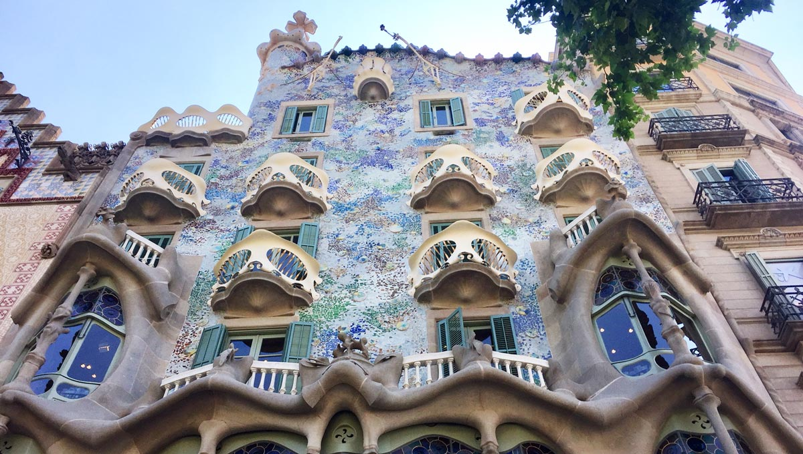

El Palacio de Gaudí, también conocido como la Casa Vicens, es una de las primeras obras maestras del arquitecto Antoni Gaudí. Ubicado en el barrio de Gràcia en Barcelona, este palacio es un excelente ejemplo del estilo modernista que caracteriza gran parte de la obra de Gaudí. Construido entre 1883 y 1888, el Palacio de Gaudí es famoso por su diseño innovador y su uso de materiales coloridos y formas geométricas. Fue comisionado por Manuel Vicens i Montaner, un corredor de bolsa que deseaba una residencia de verano que reflejara su éxito y buen gusto.
El diseño del Palacio de Gaudí combina elementos orientales y neoclásicos con el estilo orgánico que Gaudí desarrollaría más adelante. Las cerámicas coloridas, los detalles de hierro forjado y las formas inspiradas en la naturaleza son características distintivas de este edificio.
En 2005, la Casa Vicens fue declarada Patrimonio de la Humanidad por la UNESCO, reconociendo su importancia como obra pionera de Gaudí. Hoy en día, el palacio es un museo que atrae a visitantes de todo el mundo, interesados en explorar la genialidad de uno de los arquitectos más influyentes de la historia.
El Palacio de Gaudí en Barcelona, conocido como la Casa Vicens, no solo es un testimonio del talento innovador de Antoni Gaudí, sino también un monumento significativo del movimiento modernista en Cataluña. Este palacio, con su rica historia y su diseño único, sigue inspirando a visitantes de todo el mundo y es una pieza crucial del patrimonio cultural de Barcelona.